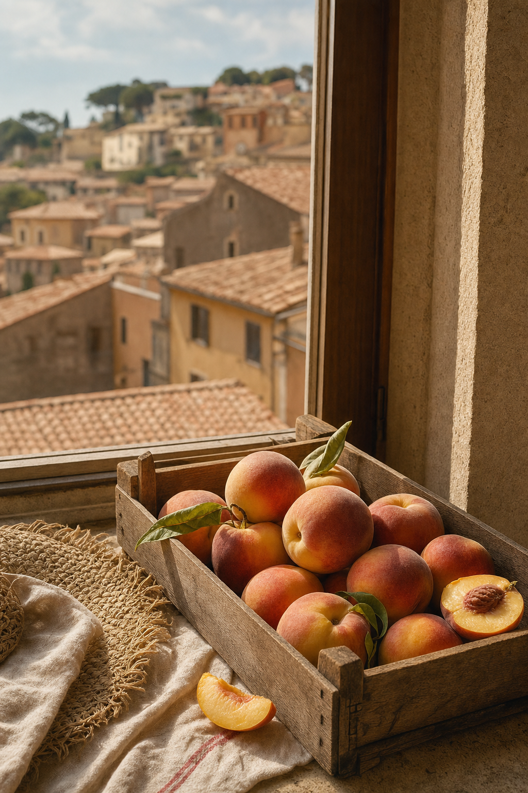

Eventi & appuntamenti.
Angelus di Papa Leone XIV.
Tre appuntamenti pubblici del Santo Padre da piazza della Libertà, in occasione della residenza estiva al Palazzo Apostolico. Ingresso libero, tutti i posti si esauriscono in mattinata.

90ª Sagra delle Pesche.
Il borgo si è vestito a festa per una settimana di tradizioni, degustazioni, musica dal vivo e mercato contadino. Le pesche di Castel Gandolfo — dolcissime, dalla polpa gialla o bianca — sono protagoniste di dessert, cocktail e piatti d'autore.
Novanta anni di storia: la prima edizione risale al 1934. La 90ª edizione si è chiusa il 26 luglio 2026 ([Comune di Castel Gandolfo](https://comune.castelgandolfo.rm.it/it/news/al-via-la-90a-sagra-delle-pesche-2026-dal-20-al-26-luglio-castel-gandolfo-si-veste-a-festa)). La 91ª edizione è attesa nella terza settimana di luglio 2027.
Rassegne & concerti.
Musica classica, sacra, jazz. Il cortile del Palazzo Apostolico e la Collegiata di San Tommaso da Villanova ospitano una programmazione estiva d'eccellenza.
Nota: le aperture del Palazzo Apostolico possono variare durante la residenza estiva del Papa. Verificare sempre sul sito dei Musei Vaticani prima di programmare la visita.